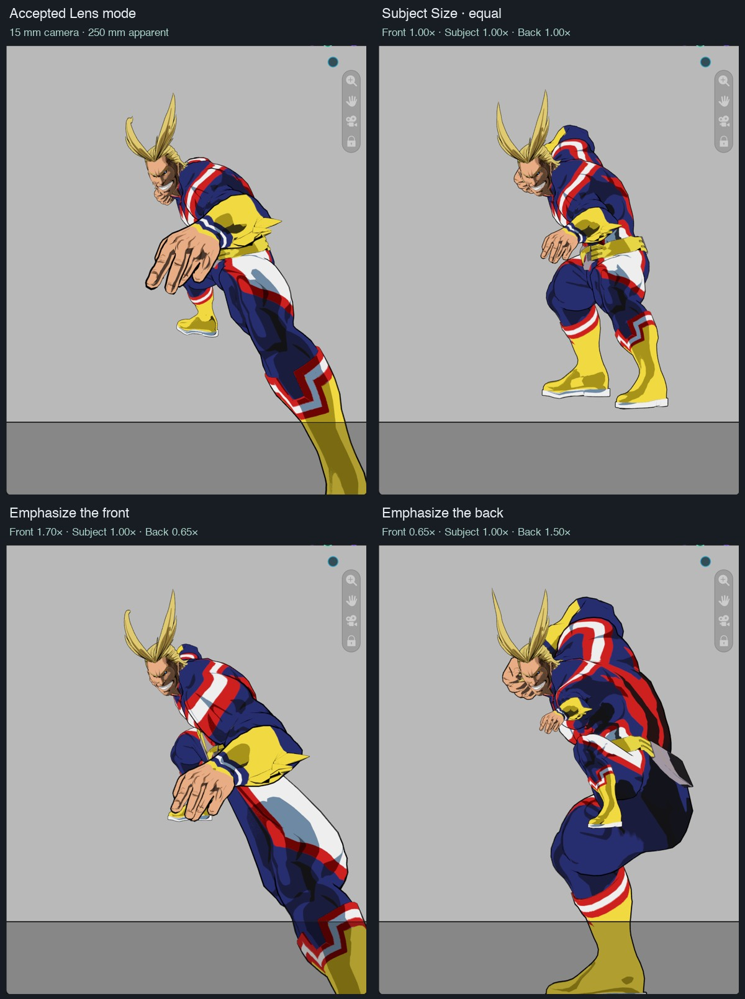
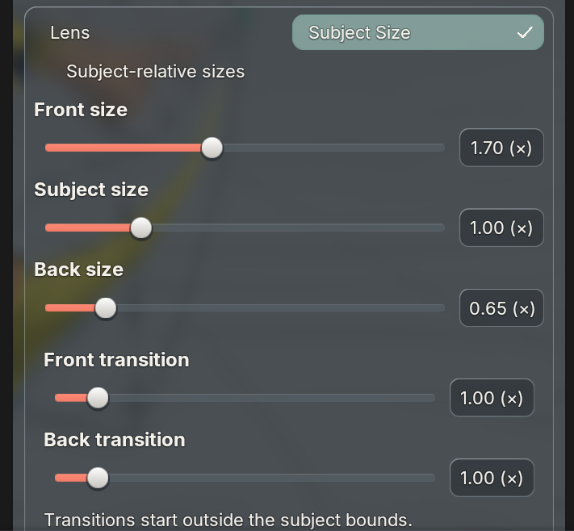

Actual All Might Metal captures. Camera, lens and frame stay fixed. The subject supplies shared evaluated pre-effect bounds; front and back transitions begin outside those bounds.
The checkpoint is published: BUI f03c584 on main, CamKeys c40ed1d on master. This experiment stays on a separate branch.

Sizes above 1× can extend beyond the frame; the camera does not move to compensate.

Geometry and native/BUI property checks pass on Blender 4.2.23, 4.3.2, 4.4.3, 4.5.15, 5.0.1, 5.1.2 and 5.2.2 on macOS. The existing Lens branch matches its checkpoint numerically. A 32k-point fixture measured about 1.1 ms for Subject Size versus 1.7 ms for Lens; this is not whole-scene FPS.
The shared continuous deformation preserves depth order. Five nested-surface tests produced zero new inter-layer intersections. Coarse triangle interpolation, existing overlaps, unaffected objects and independently configured effects prevent a universal collision guarantee. This artistic mode does not claim exact volume or shader invariance. A viewport bounds gizmo, dedicated motion GIF and physical Windows replay remain unqualified.